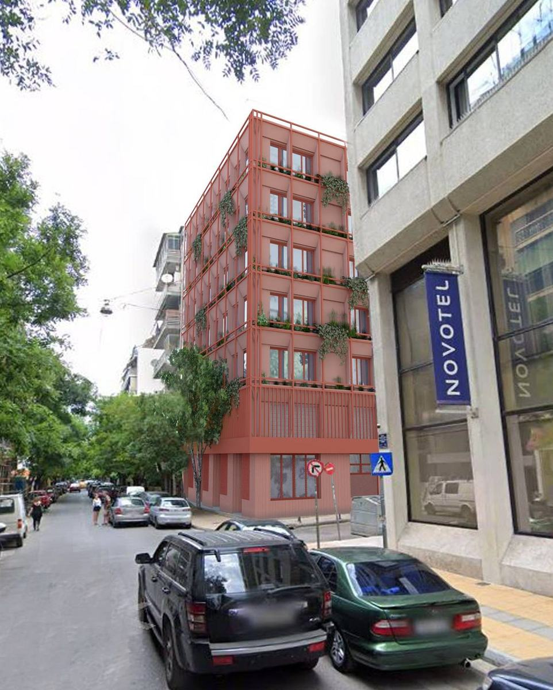
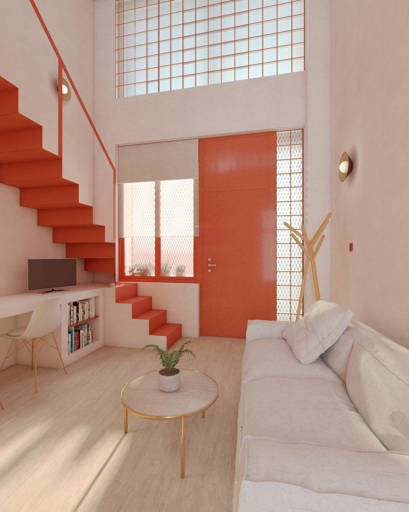
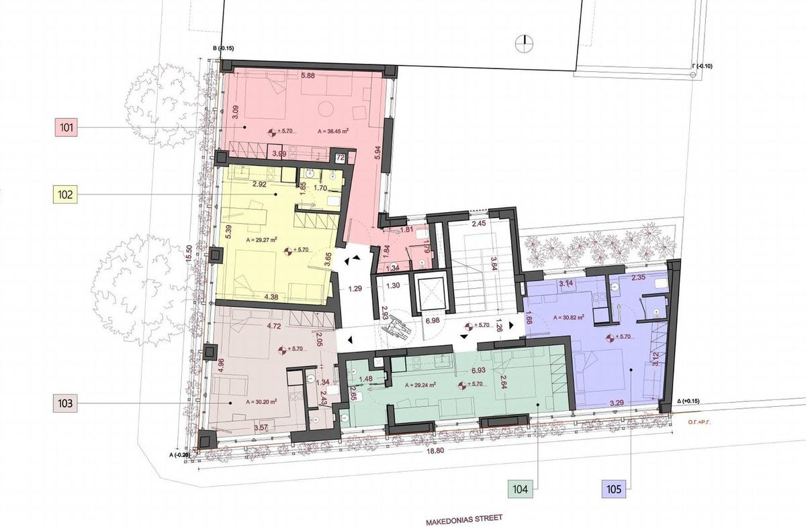
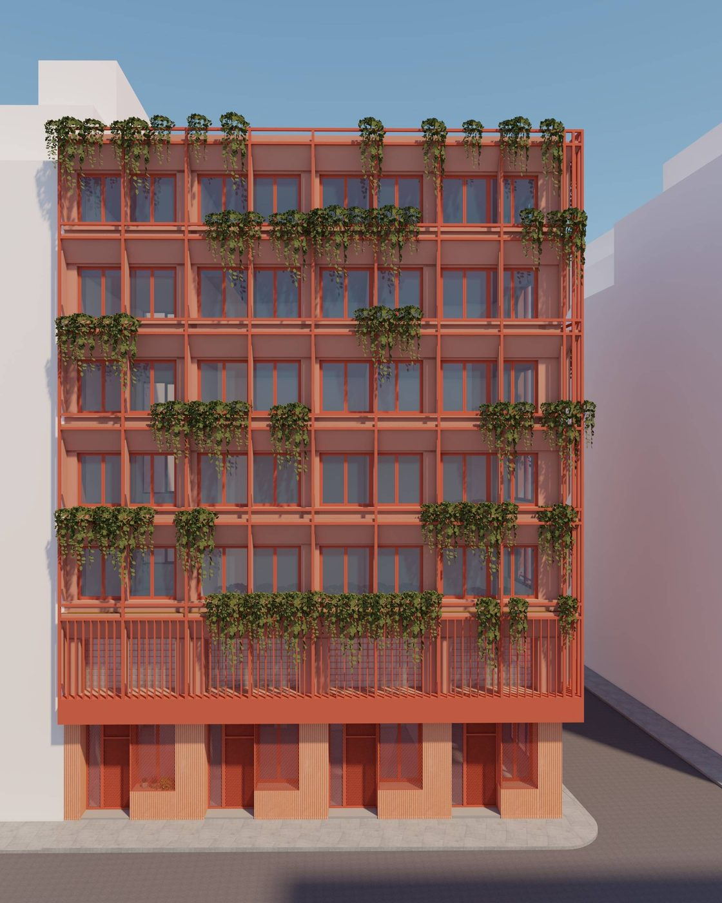
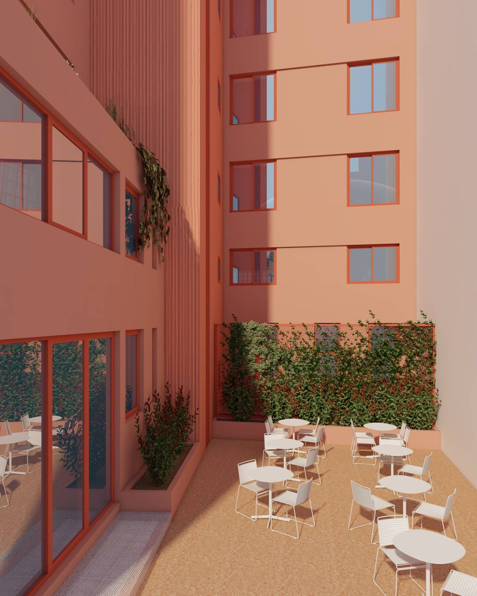
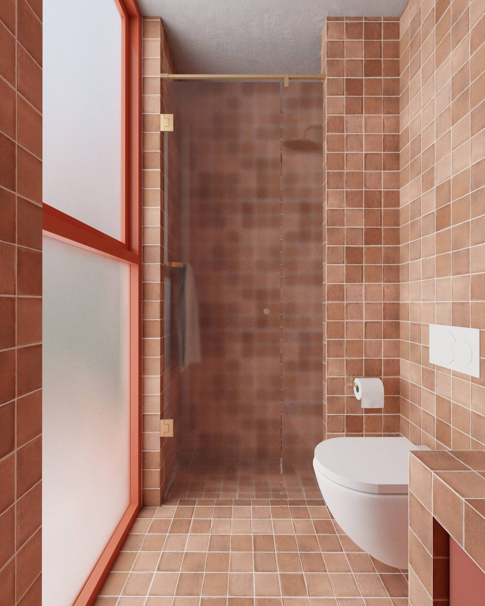
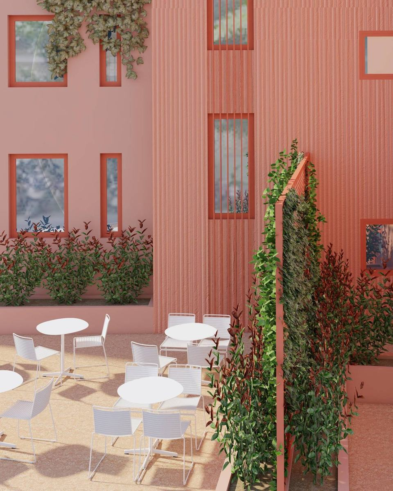

Atina'nın merkezinde 250.000 € eşiği nasıl mümkün oluyor, süreç nasıl işliyor, toplam maliyet ne kadar? Karar vermeden önce bilmeniz gereken her şey.
MICHAILVODA8.COM8 MICHAIL VODA SK. · 104 39 ATİNA
01 — ProgramMichail Voda 8
Eşik neden 250.000 €?
Yunanistan'ın yatırım yoluyla oturum izni programında asgari tutar bölgeye göre değişiyor. Bir istisna, konumdan bağımsız olarak en düşük eşiği koruyor.
Yatırım türü
Asgari tutar
Atina, Selanik, Miykonos, Santorini ve nüfusu yüksek adalarda konutYoğun talep gören bölgeler
800.000 €
Yunanistan'ın diğer bölgelerinde konut
400.000 €
Ticari binadan konuta dönüşüm veya tarihi yapı restorasyonuKonum şartı aranmaz
250.000 €
Bu ayrımın pratik anlamı: 250.000 € bütçeyle normal konut alımı yapan bir yatırımcı, Atina'da programa giremez; şehrin çeperindeki ilçelere ya da başka şehirlere yönelmek zorunda kalır. Dönüşüm istisnası konum şartı getirmediği için aynı bütçeyle şehrin tam merkezinde daire sahibi olunabilir.
Michail Voda 8 bu istisna kapsamında
Atina merkezinde, Michail Voda ile Makedonias sokaklarının köşesindeki bir ofis binası, Gavalas·Ioannidou Architecture imzasıyla 30 daireli bir konut binasına dönüştürülüyor. Binanın konuta dönüşümü hukuken tamamlanmış durumda.

Bilgiler Ağustos 2026 itibarıyla geçerlidir. Mevzuat değişebilir; güncel durum için hukuk büromuzdan teyit alınız.
2
02 — Oturum İzniMichail Voda 8
İzin size ne veriyor?
Süre
5 yıl, yenilenebilir
Yatırımınızı elinizde tuttuğunuz sürece izin yenilenir. Yenilemede yeni bir yatırım şartı yoktur.
İkamet
Kalma zorunluluğu yok
Yunanistan'da yaşamak zorunda değilsiniz. Yılda bir gün bile kalmadan izniniz geçerliliğini korur.
Seyahat
Schengen'de serbest
27 ülkelik Schengen bölgesinde her 180 günde 90 güne kadar vizesiz seyahat edebilirsiniz.
Çalışma
Şirket kurabilirsiniz
Ücretli çalışma hakkı vermez; ancak Yunanistan'da şirket kurabilir, ortak olabilir, temettü alabilirsiniz.
Başvuruya kimler dahil edilebilir
Kişi
Koşul
Eş
Yaş sınırı yok
Çocuklar
21 yaşından küçük
Başvuranın anne-babası
Yaş sınırı yok
Eşin anne-babası
Yaş sınırı yok
Tek yatırımla üç kuşak aynı başvuruya dahil edilebiliyor. Dört kişilik bir aile, iki taraf ebeveynle birlikte sekiz kişiye kadar çıkabilir.
Vatandaşlık ayrı bir süreçtir. Bu program oturum izni verir. Yunan vatandaşlığı için ülkede fiilen yedi yıl ikamet etmek, B1 seviyesinde Yunanca bilmek ve entegrasyon sınavını geçmek gerekir. Oturum izni bu sürecin ön koşulunu sağlar, ancak otomatik bir hak doğurmaz.
3
03 — YatırımMichail Voda 8
Toplam maliyet tek tabloda
Ayırmanız gereken bütçe ve karşılığında elinize geçenler. Gizli kalem yok.
Kalem
Tutar
Daire bedeliSabit fiyat
250.000 €
Satın alım vergisiDevlete ödenir
7.725 €
Ayırmanız gereken toplam bütçe
257.725 €
Avukatlık, noter, tapu ve kadastro tescili, sağlık sigortasıDört kişilik aile için yaklaşık 13.500 € · satıcı karşılar
+ 12.000 – 15.000 €
5 yıllık kira gelirinizAylık 500 € · teslimden itibaren · hesabınıza yatırılır
+ 30.000 €
Karşılaştırırken dikkat edin: Piyasadaki çoğu teklif yalnızca daire bedelini gösterir; avukatlık, noter ve tescil masrafları sonradan alıcıya fatura edilir. Bu rehberdeki 257.725 € rakamı, cebinizden çıkacak toplam tutardır.
Kira garantisi
Anahtar tesliminden itibaren beş yıl boyunca aylık 500 € kira, satış sözleşmesinde yazılı bir yükümlülük olarak taahhüt edilir. Kiracı bulma, boş kalma, tahsilat ve yönetim sorumluluğu size ait değildir.
Golden Visa kapsamındaki mülkler kısa dönem kiralamaya (Airbnb vb.) kapalıdır; beş yıllık uzun dönem garanti bu kısıtı zaten karşılar.

4
04 — ProjeMichail Voda 8
Bina ve daireler
Adres
8 Michail Voda Sk., 104 39 Atina
Proje türü
Ofisten konuta dönüşüm
Daire sayısı
30 daire
Müsait daire
12 daire · 1., 2. ve 3. katlar
Büyüklük
29 – 49 m² net
Teslim
Aralık 2026 · eşyalı
Mimari
Gavalas·Ioannidou Architecture
Hukuk
Ramadanoglou Politis Legal Group
Zemin kattaki asma katlı daireler ile 4. ve 5. katlar satıldı. Seçim yapılabilecek 12 daire 1., 2. ve 3. katlarda bulunuyor. Tüm daireler mobilyalı olarak teslim edilir; anahtarı aldığınız gün kullanıma hazırdır.

Tipik kat planı. Güncel müsaitlik durumu için ön görüşme talep ediniz; daire bazında durum haftalık değişebilir.
5
05 — Binadan KarelerMichail Voda 8
Dönüşümden sonrası
Ofis katları daireye, iç avlu ortak yaşam alanına dönüşüyor. Daireler eşyalı teslim edilir; mutfak, beyaz eşya ve mobilyalar fiyata dahildir.

Cephe — balkon dizisi ve bitkilendirme dönüşümle eklendi

İç avlu — ortak kullanım alanıYaşam alanı · eşyalı teslimUyku alanı

Banyo · tesisat yenilendi
Görseller mimari projeye ait tasarım görselleridir. Bina Aralık 2026'da teslim edilecektir; şantiyenin güncel durumunu gösteren tarihli fotoğrafları talep edebilirsiniz.
6
06 — SüreçMichail Voda 8
Türkiye'den ayrılmadan dört adım
İşlemlerin tamamı vekâletname ile uzaktan yürütülür. Atina'ya yalnızca parmak izi randevusu için bir kez gelirsiniz.
Vekâletname
Pasaport, nüfus kayıt örneği ve ikametgâh belgenizle Türkiye'de noterde vekâletname çıkarır, kaymakamlıktan apostil onayı alırsınız.
Tapu
Yunanistan vergi numaranız alınır; taşınmazın hukuki durumu incelenir, noterde satış sözleşmesi imzalanır, tapu ve kadastro tescili tamamlanır.
Başvuru
Siz, eşiniz, 21 yaş altı çocuklarınız ve anne-babalarınız için başvuru dosyaları hazırlanır ve teslim edilir. Süreç, satın alma tamamlandığında başlar.
Oturum kartı
Randevunuzda parmak izi verilir; beş yıllık, yenilenebilir oturum kartlarınız düzenlenir.
Tek muhatapla çalışırsınız. Satış sözleşmesi, avukat, vergi numarası, noter, tapu, parmak izi randevusu ve oturum kartı takibi — hepsini aynı ekip yürütür. Sürecin hangi aşamasında olduğunuzu her an sorabilirsiniz.
7
07 — GüvenceMichail Voda 8
Paranız kime, ne zaman geçiyor?
Yurt dışına altı haneli bir tutar göndermek sürecin en tedirgin edici adımı. Akışı olduğu gibi yazıyoruz.
Ödeme
Para elden geçmez
Ödeme banka kanalıyla yapılır. Satıcıya nakit ya da şahsi hesaba transfer söz konusu değildir; her adım kayıt altındadır.
Mülkiyet
Tapu sizin adınıza
Satış sözleşmesi noter huzurunda imzalanır, tescil doğrudan alıcı adına yapılır. Arada şirket ya da vekil mülkiyeti yoktur.
Denetim
Bağımsız avukat hakkı
Sözleşmeyi imzalamadan önce kendi seçtiğiniz bir avukata inceletebilirsiniz. Avukatlık masrafı zaten satıcıya aittir.
Taraflar
Kayıtlı ve doğrulanabilir
Bina gerçek ve kayıtlı bir adreste. Hukuki süreci Kolonaki'deki Ramadanoglou Politis Legal Group yürütür.
Binayı yerinde görün
Karar öncesinde Atina'ya gelip binayı, daireleri ve çevreyi kendi gözünüzle görmek isterseniz ziyaretinizi planlarız. Uzaktan karar vermek zorunda değilsiniz.

8
08 — Sık SorulanlarMichail Voda 8
Aklınıza takılanlar
29 m² küçük değil mi?
Daire, oturmak için değil programa girmek ve kira geliri elde etmek için alınıyor. Atina merkezde stüdyo daireler öğrenci ve genç profesyonel kiracıların en çok aradığı tip; beş yıllık kira garantisi de bu talebe dayanıyor. 49 m²'ye kadar seçenek mevcut, fiyat değişmiyor. Belirtilen metrekareler net kullanım alanıdır; tapuda görünen alan ortak alan payıyla birlikte daha büyüktür.
Bu fiyata Yunanistan'da daha büyük ev alınmaz mı?
Alınır, ancak Atina merkezde değil; ve daha önemlisi normal bir konut alımı sizi programa sokmaz. Atina'da konut alımıyla programa girmek için eşik 800.000 €'dur.
Teslim Aralık 2026 — o zamana kadar beklemem mi gerekiyor?
Binanın konuta dönüşümü hukuken tamamlandı. Oturum izni başvuru süreci, satın alma tamamlandığında başlar. Size özel takvim, hukuk büromuz tarafından netleştirilir.
Yunanistan'a gitmem gerekir mi?
Asgari kalma zorunluluğu yoktur. Süreçte yalnızca biyometrik veri (parmak izi) randevusu için bir kez gelmeniz gerekir; kalan işlemler vekâletle yürütülür.
Daireyi sonradan satabilir miyim?
Mülk sizindir, satabilirsiniz. Ancak satış hâlinde oturum izninin dayanağı ortadan kalkar ve izin yenilenmez.
Kira garantisini kim veriyor?
Garanti, satış sözleşmesinin bir maddesidir; noter huzurunda imzalanan sözleşmeyle taahhüt edilir. Sözlü bir vaat değildir.
Airbnb yapabilir miyim?
Hayır. Golden Visa kapsamındaki mülkler kısa dönem kiralamaya kapalıdır. Beş yıllık uzun dönem kira garantisi bu kısıtı zaten karşılar.
9
08 — İletişimMichail Voda 8
Sorularınızı konuşalım
15 dakikalık bir görüşmede durumunuza özel takvimi, uygun daireleri ve toplam maliyeti birlikte netleştirelim.
WhatsApp
+90 536 569 68 96
Web
michailvoda8.com
E-posta
info@michailvoda8.com
Proje adresi
8 Michail Voda Sk., 104 39 Atina
Bu rehber bilgilendirme amaçlıdır; hukuki, mali veya yatırım tavsiyesi niteliği taşımaz. Oturum izni başvurularının sonucu Yunan resmi makamlarının takdirindedir. Mevzuat ve harç tutarları değişebilir. Türkiye'deki vergisel yükümlülükleriniz için mali müşavirinize danışmanızı öneririz. Rakamlar Ağustos 2026 itibarıyla geçerlidir.